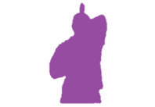
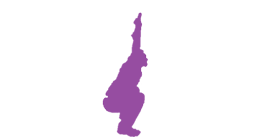
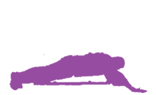
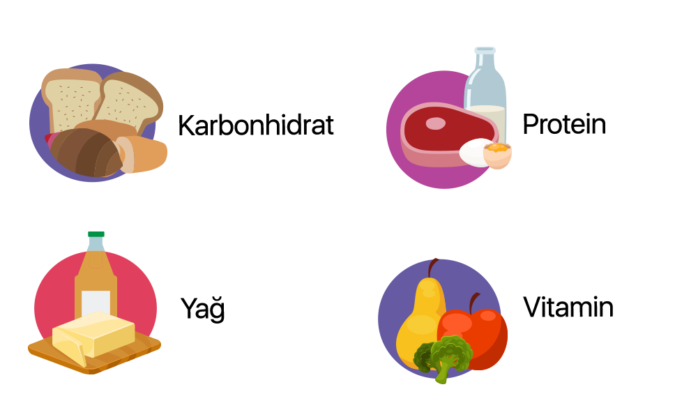

|
Denge testinde; Gözler açık olan testte iyi performansına karşın gözü kapalı testte kötü performans sergilemiştir. Propriyooseptif duyu algısı iyi değildir. İyi sağlanmayan denge sporcunun yön değiştirme, mücadele sporu, atış yaptığı durumlarda performans düşüklüğü yaratır.Öneriler; Sorunun kaynağını bulmak için hamstring kısalık testleri, pelvik tilt testi, core grup kasları kuvvet testleri yapılır. Sonuçlara göre hamstring germe programı ile beraber kalça kuşağı kasları dengeli güçlendirme programı, core kas grubu güçlendirme programı ile nötral pelvik tilt çalışması. FMS, Aktif Düz Bacak Kaldırma değerlendirmesi Sporcunun sol taraf testlemelerinde bacağını tam kaldıramadığı görülmüştür. Sol tarafta “2” skoru almıştır. Hamstring kasında kısalığı işaret eder. Bacak ve pelvise bağlanan hamsting kasının kısalığında, yürüme biyomekaniği bozarak sporcuyunun performansını negatif etkiler ve yaralanma riskini arttırır. Düzeltici egzersizler ile hem gövde, alt ve üst ekstremite güç, kuvvet değerlerini olumlu olarak iyileştirecektir ve yaralanmaya yol açabilecek kısalık, kas dengesizliği gibi negatif etkileri de ortadan kaldıracaktır. FMS, Gövde Rotasyonu değerlendirmesi Sporcunun sağ taraf testlemesinde gövde düzgünlüğünü sağlayamadığı görülmüştür. Sağ tarafta “2” skoru almıştır. Olası problemler; Sırt ekstansör, kalça stabilatör, omuz stabilatör grup kasların rotasyon hareketlerine karşı gerekli stabiliteyi sağlayamaması. Öneriler; Sorunun kaynağını bulmak için gövde stabilizatörlerinden hangisinin yetersiz olduğunu bulmak gerekir. Abdominal kaslar ve sırt ekstansörleri testlenir. Ve buna uygun rotasyonel yön komponentli gövde stabilizasyon egzersizleri verilir. FMS, Rotasyonel Stabilite değerlendirmesi Sporcunun sağ taraf testlemesinde gövde düzgünlüğünü sağlayamadığı görülmüştür. Sağ tarafta “2” skoru almıştır. Olası problemler; Sırt ekstansör, kalça stabilatör, omuz stabilatör grup kasların rotasyon hareketlerine karşı gerekli stabiliteyi sağlayamaması. Öneriler; Sorunun kaynağını bulmak için gövde stabilizatörlerinden hangisinin yetersiz olduğunu bulmak gerekir. Abdominal kaslar ve sırt ekstansörleri testlenir. Ve buna uygun rotasyonel yön komponentli gövde stabilizasyon egzersizleri verilir. FMS, Omuz Mobilitesi değerlendirmesi Sporcunun sağ taraf testlemesinde gövde düzgünlüğünü sağlayamadığı görülmüştür. Sağ tarafta “2” skoru almıştır. Olası problemler; Sırt ekstansör, kalça stabilatör, omuz stabilatör grup kasların rotasyon hareketlerine karşı gerekli stabiliteyi sağlayamaması. Öneriler; Sorunun kaynağını bulmak için gövde stabilizatörlerinden hangisinin yetersiz olduğunu bulmak gerekir. Abdominal kaslar ve sırt ekstansörleri testlenir. Ve buna uygun rotasyonel yön komponentli gövde stabilizasyon egzersizleri verilir. 
SOL TARAF 2 SAĞ TARAF 2 TOPLAM 1 
SOL TARAF 2 SAĞ TARAF 2 TOPLAM 1 
SOL TARAF 2 SAĞ TARAF 2 TOPLAM 1

SOL TARAF 2 SAĞ TARAF 2 TOPLAM 1 
SOL TARAF 2 SAĞ TARAF 2 TOPLAM 1

TOPLAM 2

TOPLAM 3 |
|---|
|

Ayak postür incelemesinde; SOL ayağı PRONASYONDA(içe doğru dönme), SOL ayağı NORMAL bulunmuştur. Gözü kapalı denge testinin kötü olması bozulan sol ayak postürü ile gelişen bozulmuş duyu algısı ile açıklanabilir. Ayak postürünün bir parçası olan ayak iç arkı yüksekliği; Sol ve Sağ ayak için NORMAL bulunmuştur. Kısalık testlerinde; kısalık bulunmamıştır. Skolyoz testinde; herhangi anormalliğe rastlanamamıştır. Postür Analizinde; SAĞ taraf OMUZ DÜŞÜKLÜĞÜ görülmüştür. ARTMIŞ LUMBAR LORDOZ görülmüştür. Kas dengesizlikleri, vücut algı bozuklukları gibi durumlar postürde görülen anormalliklere yol açabilir. |
|---|
NOT: Bu karne kesinlikle hastane veya hekim raporu değildir. Sadece alanında uzman kişiler tarafından ölçümlerin yapıldığı gün ve saatte alınan ölçüm değerlerinin norm verilere göre yapılan analiz sonuçlarıdır.